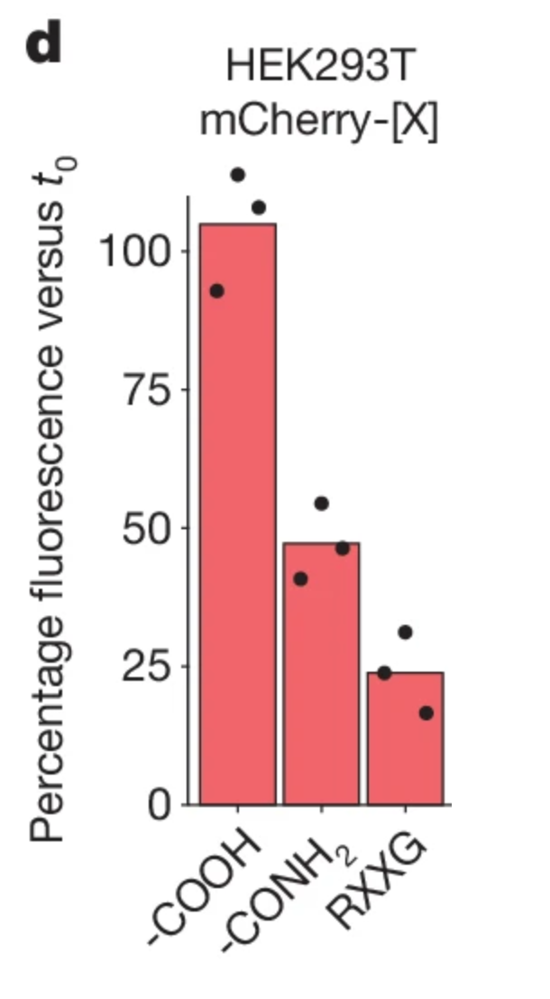

Objectives
Define the fundamental concepts of Principal Component Analysis (eigenvalues, eigenvectors, variance, and covariance/correlation matrices).
Explain the purpose of PCA and how it reduces dimensionality while preserving variance.
Perform PCA using the FactoMineR package in R on a given dataset.
Interpret PCA results (eigenvalues, contributions, squared cosine values, and biplots) to draw meaningful conclusions.
Schedule
1:30 PM - 1:45 PM Quiz (Statistics & R)Kahoot
1:45 PM - 2:00 PM Icebreaker
2:00 PM - 2:45 PM Theoretical Introduction to PCA Part 1, theory
2:45 PM - 3:15 PM Activity: run PCA in R and explore the results Part 2, FactoMineR
3:15 PM - 3:30 PM Break —
3:30 PM - 5:00 PM Group Activity: Reproducing a PCA from a Scientific Study Part 3, activity
5:00 PM - 5:15 PM Summary & Key Takeaways Part 4, take-aways
5:15 PM - 5:30 PM Q&A and Course Feedback Part 5
Important documents
The shared document to write R code is located here
Links to
Prerequisites
Before class, you were asked to reproduce, with R, the following Figure from a recent publication with the associated data

Below is the solution that I propose.
Solution
## I'm using mainly tidyverse functions library (dplyr)library (readxl)library (ggplot2)library (tidyr)## I saved the xlsx file in data/dataset_fig1.xlsx <- read_excel ("data/dataset_fig1.xlsx" , sheet = 2 , skip = 2 ) %>% rename (condition = sample) %>% pivot_longer (cols = - condition,names_to = "replicate" ,values_to = "stability" ) %>% mutate (condition = factor (x = condition,levels = c ("-[COOH]" , "-[CONH2]" , "RxxG" )))## Plot %>% ggplot (aes (x = condition, y = stability)) + stat_summary (geom = "bar" , fun = "mean" , fill = "salmon" ) + geom_point () + scale_y_continuous (limits = c (0 , 125 ), breaks = 25 * (0 : 5 )) + theme_bw () + labs (x = "" ,y = latex2exp:: TeX ("Percentage fluorescence versus \\ textit{$t_0$}" ),title = "HEK293T mCherry-[X]" ) + theme (axis.text.x = element_text (angle = 45 , hjust = 1 ))
References
François Husson’s MOOC on exploratory multivariate analysis
Abdi, H., & Williams, L.J. (2010). Principal component analysis . Wiley Interdisciplinary Reviews: Computational Statistics, 2, 433-459.
Abdi, H.; & Williams, L. (2022). Correspondence analysis (CA) . In B. Frey (Ed.), The SAGE Encyclopedia of Research Design. Thousand Oaks: Sage. pp. 327-339.
Abdi, H., Guillemot, V., Liu, R., Niang, N., Saporta, G., & Yu, J.-C. (2024). From plain to sparse correspondence analysis: a generalized SVD approach . Statistica Applicata, 35(3), 1-39.